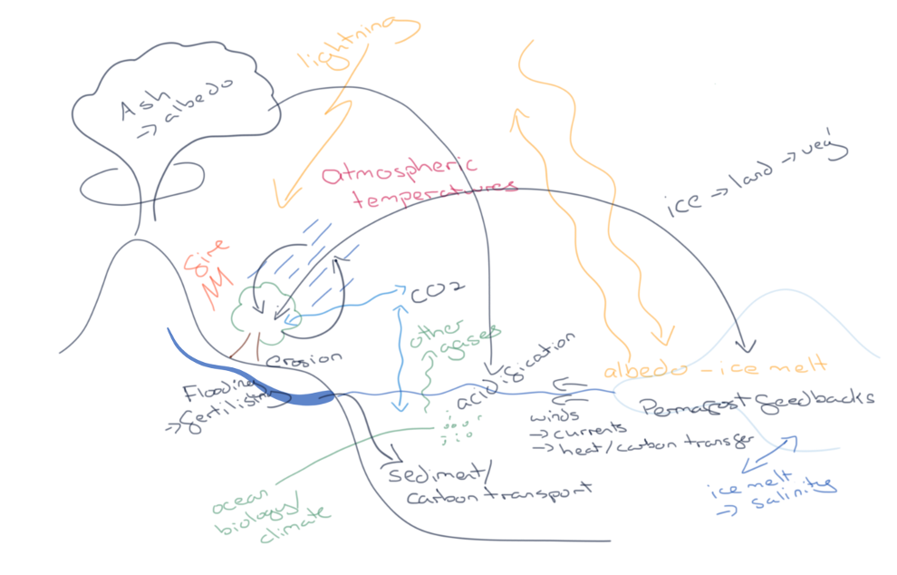
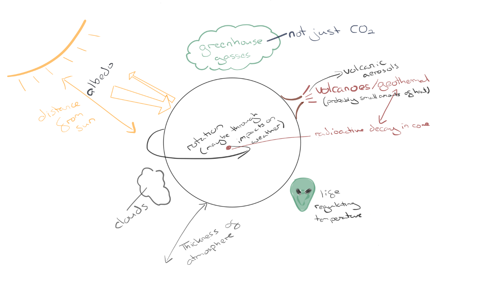
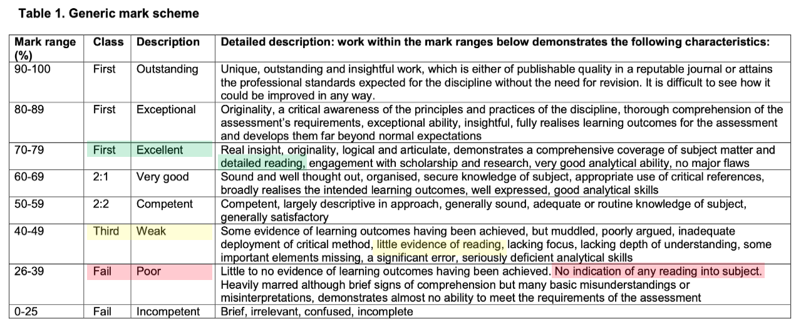
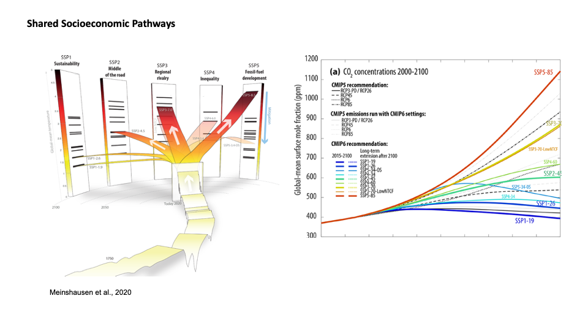
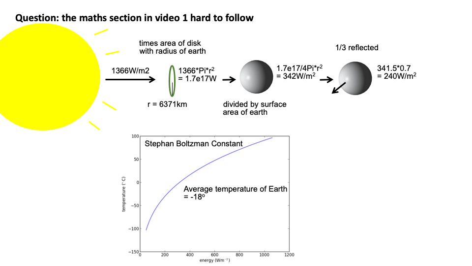
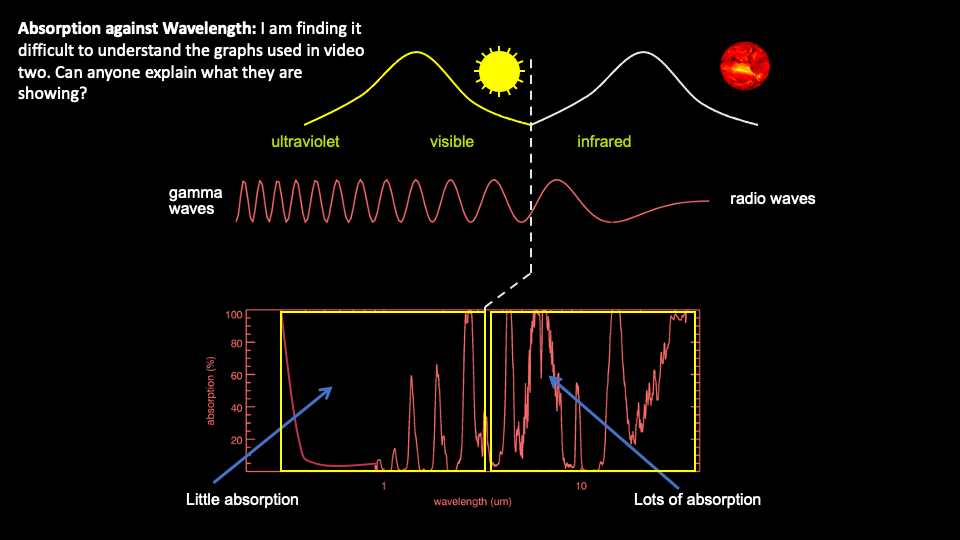
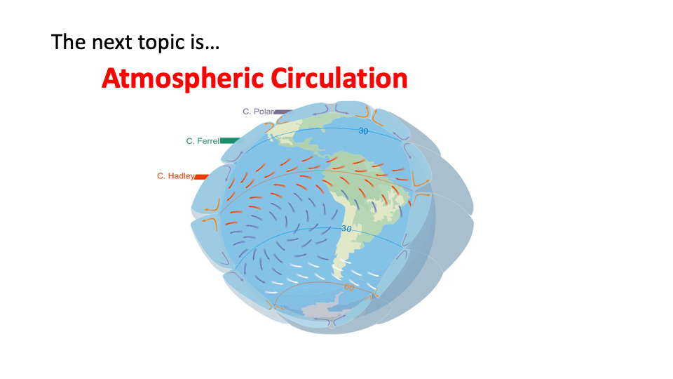

Week 1: The Earth System and climate change fundamentals. Lecture 2.
Paul Halloran
If required, reload page to scale to different screen size.
The structure of today's session
Before we kick off I've got a few questions
www.menti.com
use the code:
8418 0297
Earth System connectivity exercise
Padlet exercise: Name/describe links between the components of the Earth System

Task 2: Plausible (but as far-fetched as you like) hypotheses for the temperature differences between the planets.
Padlet exercise: Name/describe links between the components of the Earth System
| Ideas |
|---|
| - The different rock types a planet has affects its ability for absorption of radiation |
| - The size of the atmosphere effects rates of radiation that can escape, for example radiation looses more energy the further it must travel. |
| - The ice content of a planet's surface affects its overall temperature by altering the planets albedo. |
| - The materials comprising the ground surface of the planets |
| - The sun is releasing a magnetic force which is drawing the earth closer to the Sun causing it to heat up. |
| - Atmospheric pressure |
| - Some planets have high levels of radioactive decay in their cores, creating lots of heat which warms the surface |
| - The temperature of planets may vary due to what their core consists of. E.g a metal based core may store and emit heat versus and gas planet where heat cannot be stored as easily |
| - Each individual planet is made of different materials and rock type, therefore they heat and cool at different rates, thus altering their temperature. |
| - My hypotheses is that a planets presence/ lack of ozone layers and atmospheres influence the effect of greenhouse house gases in relation to temperature. A planet with little to no atmosphere that is also far from the sun could be very cold. Earth is the third planet from the sun so should be quite warm if you assume its proximity to the heat source however our atmosphere and ozone layer help shield us from the suns energy so our planet is not too hot. |
| - The molecular makeup of the surface of each planet may be different, resulting in different levels of absorption of solar radiation and emission of infrared. For example, the molecular structure of the surface of Venus may be better at absorbing and retaining solar radiation than the surface of Mercury. |
| - Different greenhouse gases have different global warming potentials (GWP) therefore different compositions of greenhouse gases between planets would cause different temperatures |
| - The density of the gases on each planet may explain the temperature differences? But also the density of the planet?? |
| - Something else warms the planets, e.g. a moon, which emits different wavelengths of light in different directions, meaning that different planets receive different types of waves with different wavelengths, which therefore cause different levels of absorption by the planet. This leads to differing temperatures of the surface of these planets. |
| - Some planets may have a greater fluctuation of surface temperatures depending on how fast or slow they rotate. If a planet rotates slowly the side facing the sun will have much longer exposure, heating that side up considerably more than the side facing away from the sun. |
| - The planet’s different surface albedo |
| - Humans used to live on Venus, but messed up the climate so badly they had to evacuate to Earth, leaving Venus with a much higher temperature than before. |
| - Another potential reason for the differing temperatures of these planets could be due to the Specific Heat Capacity of the material on the surface. Approximately 71% of the earths surface is covered by water, which has a high specific heat capacity of 4.184 J/g/C. This means that water takes a lot of energy to warm by 1 degree C. Water also reflects large amounts of the incoming terrestrial radiation which reduces the warming effect and could be an explanation for why Earth(14C) is a lot cooler then Venus (around 500C). The surface of Venus is largely exposed volcanic bedrock, likely to be composed of an an iron containing mineral like magnetite. Magnetite has an extremely low Specific Heat Capacity due to its high iron content - 0.450J/g/C. This means that Venus' surface only requires minimal energy to have a warming effect, potentially being the reason for the high temperatures in Venus' atmosphere. |
| - The planets' provide what we need, so the changes in temperatures suggest there are different lifestyles and life forms to be supported |
| - The atmospheres of different planets will have different percentages of certain elements/ gases in them (e.g. nitrogen, oxygen etc) and some will be better at absorbing heat than others. This will create colder or warmer temperatures depending on what gases are present |
| - Different planets may have different temperatures due to the different colours of their landscapes. As lighter coloured planets may reflect light better thereby remaining cooler. In contrast a darker colour planet may absorb more light and remain hotter. |
| - The surface area of oceans on each planet as oceans can absorb carbon dioxide which will reduce the air temperature |
| - Greenhouse gases and the atmosphere don't effect planet temperatures but rather the Turtle inside the core of each planet. Sometimes they get bored and change the temperatures for fun. (STILL PLAUSIBLE!!!). |
| - Different planets have different albedos. If the planet has a dark surface, it absorbs radiation more efficiently. This applies to Venus due to the fact that its atmosphere is largely formed of carbon dioxide. There may even be seasonal variation, such as snow cover, rain, etc. The Earth has oceans which influence the distribution of heat and other planets have various climates, such as Mars with ice caps and sandstorms which influences its ability to retain solar radiation. |
| - Maybe it could be due to potential tectonic activity on other planets and volcanic eruptions which could release gases into the planets atmosphere affecting and leading to temperature differences. |
| - Each planet may have different types of living organisms (maybe even aliens?). These different organisms may emit different amounts of heat energy as well as different greenhouse gases (such as large amounts of CO2) which contribute to the overall temperature of the planet. |
| - Different living creatures on different planets may impact the temperature of the planet through their metabolic processes |
| - My theory is that the planets have different temperatures not due to the distance from the sun but due to the thickness of their atmospheres and the natural resources, eg the earth is colder because it has water which can become water vapour and make for a thicker atmosphere |
| - Different planets have different elements/materials making up their surfaces which could mean they absorb/reflect different amounts of radiation which could be a factor which determines temperature.. |
| - Greenhouse gases may react differently with the elements that form the atmospheres of different planets and so cause extreme (high/low) temperatures |
| - the tilt of a planet's axis- this will affect the seasons on a planet, affecting the climate as planets receive more solar radiation in summer, so if summer is longer, it will receive more radiation and have a hotter climate and vice versa |
| - different species on these planets could have invented systems that have resulted in differing surface temperatures despite their distance to the sun in order to adapt |
| - Due to the continuing increase of the earths population more body heat is contributing to the planets rising temperature. |
| - The make up of the planet may change its temperature. For example, if a planet has a lot of ice, more light will be reflected in its albedo, so temperature could reduce |
| - They have different inner core temperatures which affect their overall temperature making them hotter or colder than expected |
| - The elliptical orbits of the planets around the sun could affect the temperature? |
| - The material that makes up the planet, for example the oceans/seas on Earth have different temperature currents; collectively these can affect the land temperature of the planet. |
| - A planet's rotation depending on day and night may affect it's temperature. Planet's where the atmospheric effect is lesser (like Earth) will have a distinct difference in temperature depending on night and day and which side of the planet is exposed to the sun. For a planet like Venus which has a very dense atmosphere, this distinction will have less of an affect and the sun's infrared radiation will not affect its temperature as significantly. |
| - Different temperatures occur because the higher the rate at which planets rotate results in more frequent eruptions of magma and particulates into the atmosphere. |
| - Planets have different primordial heat which acts as a heating system from the inside out therefore the planets vary in temperature non-linearly with their distance from the sun because of the variation of the extent of their primordial heat and how much that heat is dispersed into the planet's crust. |
| - The planets surface area and rotation speed inline with the sun |
| - The Earth has changed between glacial and interglacial periods due to changes in its orbital parameters, differences in Mercury's and Venus' orbits may affect their temperatures despite their distance to the Sun. |
| - Differences in the surfaces of the planets, for example geological make up, vegetation, urbanised areas on earth |
| - The Albedo effect, and the varying surfaces ability to reflect sunlight. |
| - The presence of water effects the redistribution of heat, such as oceans on Earth. |

Module assessment
and in preparation a bit of a quiz
The exam
google "exeter geography mark scheme"
Do you have any questions on this week's material that you would like me to revisit?
www.menti.com
use the code: 5155 4700



